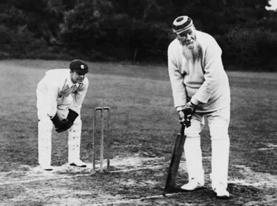

World of Cricket

Certainly! Cricket is a bat-and-ball game played between two teams of eleven players each. The game originated in England and is now popular worldwide, especially in countries like India, Australia, England, Pakistan, Sri Lanka, South Africa, West Indies, and Bangladesh. The objective of the game is for one team to score more runs than the other team. A run is scored when a batsman hits the ball and runs to the other end of the pitch, while the fielding team tries to prevent this and get the batsman out. The team that is fielding also takes turns to bat and score runs.
The earliest reference to cricket is in South East England in the mid-16th century. It spread globally with the expansion of the British Empire, with the first international matches in the second half of the 19th century. The game's governing body is the International Cricket Council (ICC), which has over 100 members, twelve of which are full members who play Test matches. The game's rules, the Laws of Cricket, are maintained by Marylebone Cricket Club (MCC) in London. The sport is followed primarily in South Asia, Australasia, the United Kingdom, Southern Africa and the West Indies.
Origin of Cricket
Cricket originated in England during the 16th century. Its exact origins are not clear, but it is believed to have evolved from a children's game called "stoolball", which was played in the 14th century. The first recorded game of cricket was played in the 16th century in Guildford, Surrey, England. The sport gained popularity in the 18th century and was played by the nobility and gentry. The Marylebone Cricket Club (MCC) was founded in 1787, and it became the governing body of the sport. Cricket was introduced to other parts of the world during the British Empire's expansion in the 19th century. The first international cricket match was played between Canada and the United States in 1844, and the first test match between Australia and England was played in 1877.
Format of the Game
Cricket is a sport played at the international level in three different formats - Test matches, One-Day Internationals (ODIs), and Twenty20 Internationals. The International Cricket Council (ICC) approves the rules and regulations for these matches and provides match officials. Test cricket is the traditional form of the game played in a five-day format, while ODIs are one-inning matches of 50 overs per side. Twenty20 Internationals are the newest format and are played with 20 overs per side.
The MRF Tyres ICC Test Match rankings are awarded to the leader of the rankings on 1 April each year, with the first team receiving a cash prize of $1 million, and the next three teams in the rankings also getting cash awards. The ICC Cricket World Cup is the pinnacle event of ODIs, contested every four years. The 50-over format has developed with the ICC organizing the Champions Trophy, ICC Women's World Cup, and ICC Under 19 Cricket World Cup.
Twenty20 Internationals are the shortest and fastest form of the game, with a match usually completed in three hours. The ICC World Twenty20 is the premier international T20 tournament, with the next edition to be played in the Caribbean in 2018. As of now, there are 12 ICC Members with Test Match status, 16 with ODI status, and all 104 member nations have been granted T20I status. Starting 2019, the ICC World Test Championship will take place with the top nine teams competing in a two-year cycle, and the top two teams at the end of the cycle will take part in the ICC World Test Championship final.
Competitions
Cricket is played at both the international and domestic level. There is one major international championship per format, and top-level domestic competitions mirror the three main international formats. There are now a number of T20 leagues, which have spawned a "T20 freelancer" phenomenon.
International Competions: Most international matches are played as parts of 'tours', when one nation travels to another for a number of weeks or months, and plays a number of matches of various sorts against the host nation. Sometimes a perpetual trophy is awarded to the winner of the Test series, the most famous of which is The Ashes. The ICC also organises competitions that are for several countries at once, including the Cricket World Cup, ICC T20 World Cup and ICC Champions Trophy. A league competition for Test matches played as part of normal tours, the ICC World Test Championship, had been proposed several times, and its first instance began in 2019. A league competition for ODIs, the ICC Cricket World Cup Super League, began in August 2020. The ICC maintains Test rankings, ODI rankings and T20 rankings systems for the countries which play these forms of cricket. Competitions for member nations of the ICC with Associate status include the ICC Intercontinental Cup, for first-class cricket matches, and the World Cricket League for one-day matches, the final matches of which now also serve as the ICC World Cup Qualifier.
First-class: First-class cricket in England is played for the most part by the 18 county clubs which contest the County Championship. The concept of a champion county has existed since the 18th century but the official competition was not established until 1890.[44] The most successful club has been Yorkshire, who had won 32 official titles (plus one shared) as of 2019.[136] Australia established its national first-class championship in 1892–93 when the Sheffield Shield was introduced. In Australia, the first-class teams represent the various states.[137] New South Wales has the highest number of titles. The other ICC full members have national championship trophies called the Ahmad Shah Abdali 4-day Tournament (Afghanistan); the National Cricket League (Bangladesh); the Ranji Trophy (India); the Inter-Provincial Championship (Ireland); the Plunket Shield (New Zealand); the Quaid-e-Azam Trophy (Pakistan); the Currie Cup (South Africa); the Premier Trophy (Sri Lanka); the Shell Shield (West Indies); and the Logan Cup (Zimbabwe).